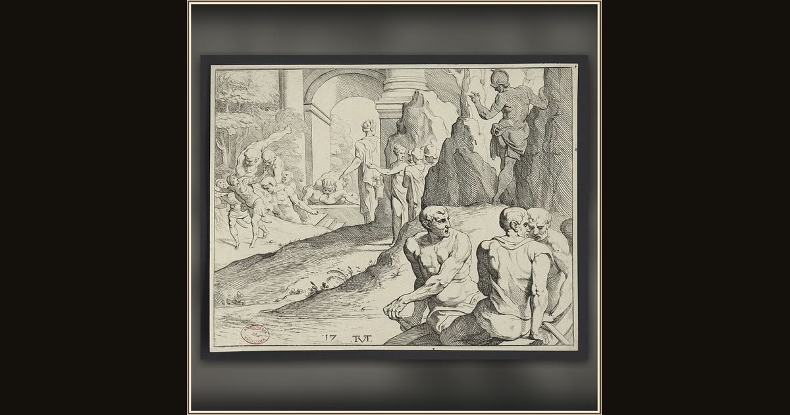

Ulysses among the Laestrygonians
Theodoor van Thulden, after Francesco Primaticcio · 1633 · Bibliothèque nationale de France · Paris, France
In this old French print, Odysseus’s scouts meet the giant Laestrygonians — and discover why sailors should never linger in their harbor. Explore its place in Book X of the Odyssey.